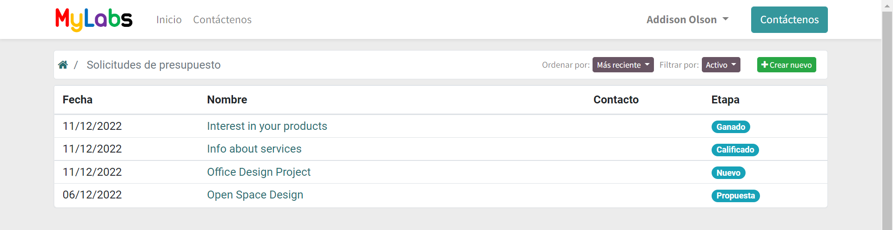
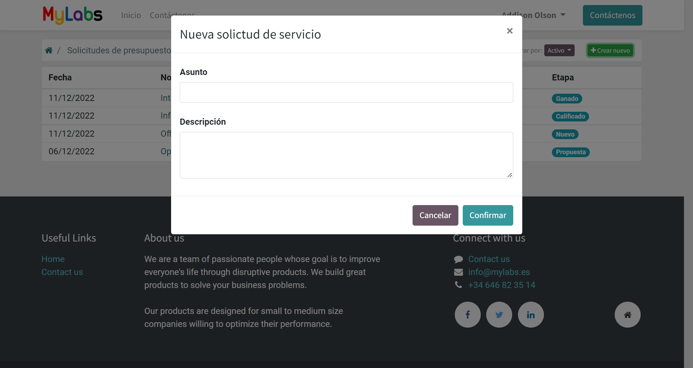
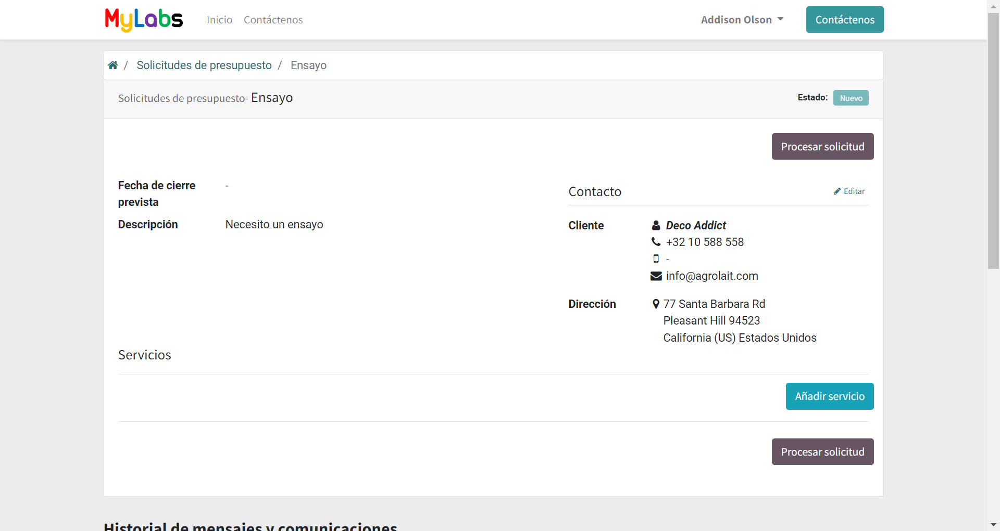
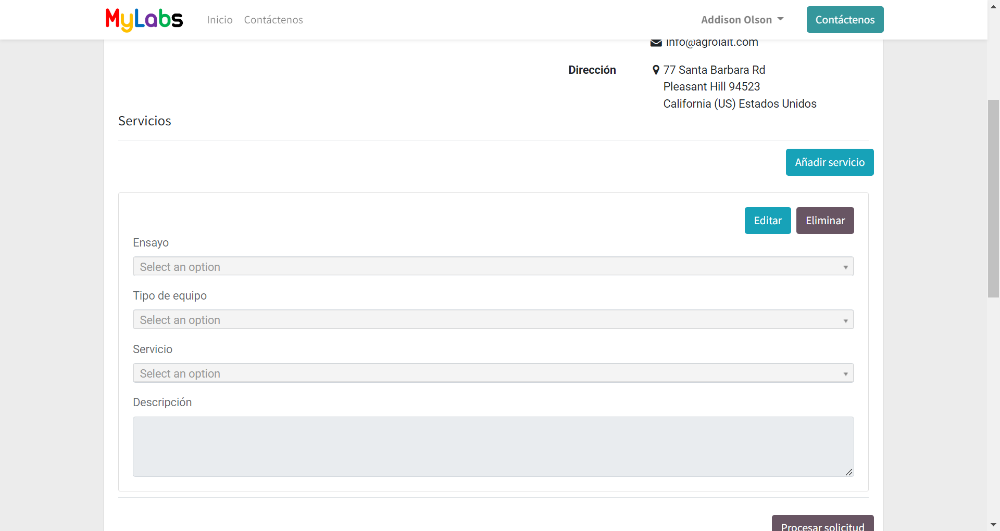
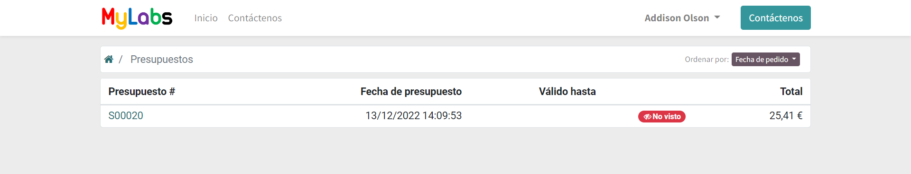
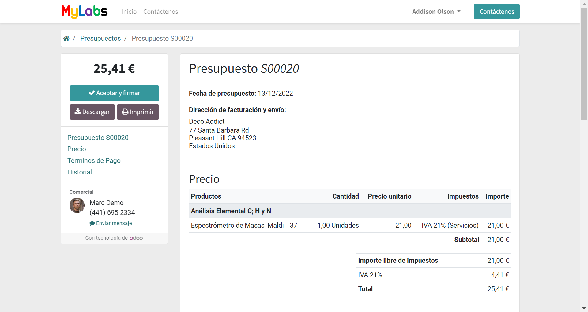
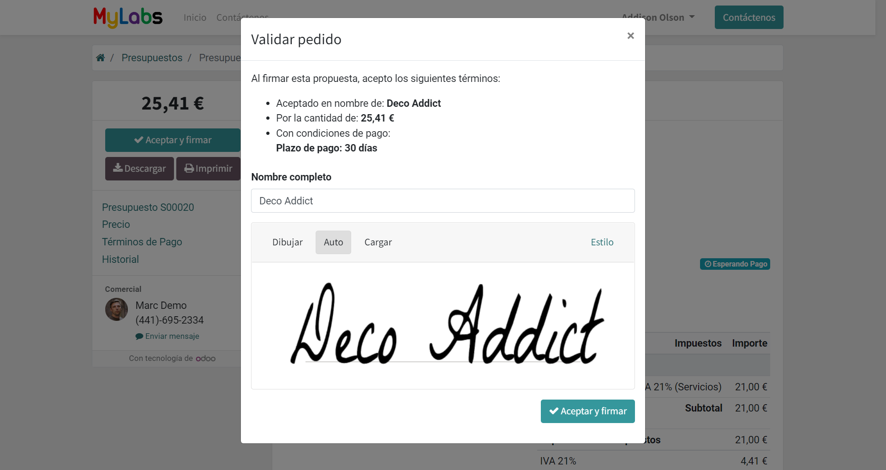
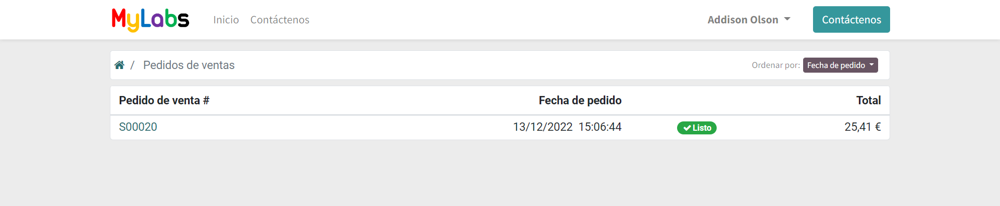
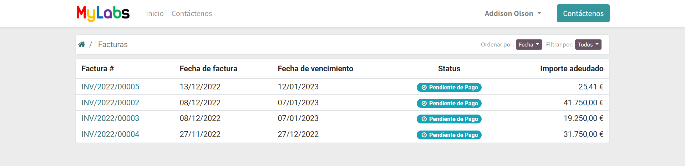
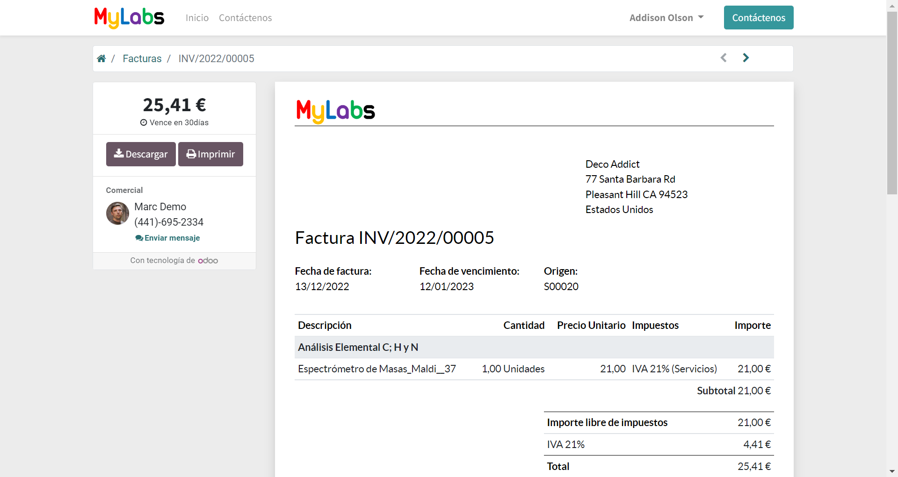

Customer section¶
The customer section contains the documents in which the user is the customer and orders services.
The expected workflow for clients is composed of the following steps:
The client makes a Request for quotation indicating what tests, services and/or equipments they needs.
The MyLabs team uses an algorithm to select the most suitable equipment to carry out the services. Send the proposal to carry out the services to the selected universities or laboratories. Once the universities and laboratories confirm the availability to carry out the services, the MyLabs team sends the client a quote.
The client must review and accept the quotation to generate the order.
The MyLabs team notifies the universities and laboratories of the acceptance of the services to begin the experiments. Once the tests have been carried out, the reports are sent to the client. The service invoice is also generated and sent.
The client must review the invoice and make the payment according to the chosen method.
Request for quotations¶
This section shows the request for quotation that the client has sent.
You can show the details or make a request for quotation indicating what tests and/or services you needs. Click Create new to make a new request for quotation.
Indicate a title and a description of the services you needs and confirm.
You can see the details of the request for quotation and the status of the request. You can be more specific in your request adding more information about the service you need. Click Add Service to add a new service line. Click Edit and Remove to edit or remove a service line.
Once the servile line is in edit mode, you can specfify the test, the service and the equipment you need.
It is not mandatory to fill in all the fields, but the more specific the request, the easier it will be for the salespersons to generate the quotation.
Each of the Test ,:guilabel:Equipment Type and Equipment Service fields are dinamically filtered depending on the value of the other fields.
So, if you select a Test, the Equipment Type and Equipment Service fields will be filtered to show only the Equipment Type and Equipment Service that are related to the selected Test.
Click Save and Cancel to save or cancel the changes in the service line.
Once you have finished, click Process request to send the request for quotation to the MyLabs team. The request can no longer be edited.
You can also write any comment, attach any document and read the answers from MyLabs team in the Message and communication history section.
Quotations¶
This section shows the quotations that the MyLabs team has sent.
You can click on a document to show the details of the quotation.
You can see the details and the status of the quotation. Click Accept and sign to accept the quotation and generate the order. You download the quotation in pdf format and print it. Write any comment to the MyLabs team and attach any document in the Message and communication history section.
When the quotation is accepted, the order is generated.
Sale orders¶
This section shows the orders that the client has generated accepting the quotations.
You can click on a document to show the details of the order. When the service has been completed, the order will be marked as done and MyLabs team will send you the final report. The invoice of the service will be also generated and sent.
Invoices¶
This section shows the invoices that the MyLabs team has sent and their status.
You can click on a document to show the details of the invoice and download it in pdf format.
